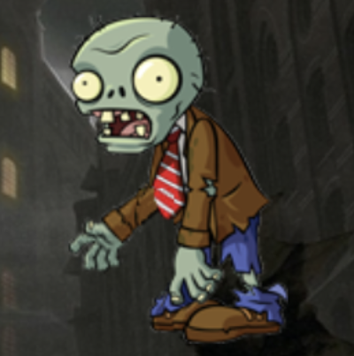
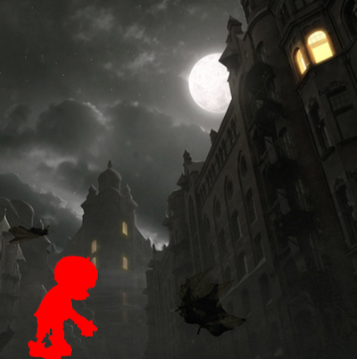
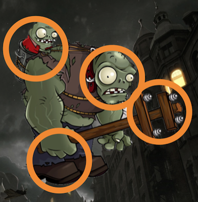

|  |
A function for Zombies to Be Falled Numerous zombies fall from top to bottom. |
|  |
A function to Remove Zombies You can remove falling zombies with a touch. Life is consumed when zombies reach the bottom. |
|  |
A function to Touch Circles Touch the given circles within the time limit to get rid of them all. If you can't get rid of it, life is consumed. |